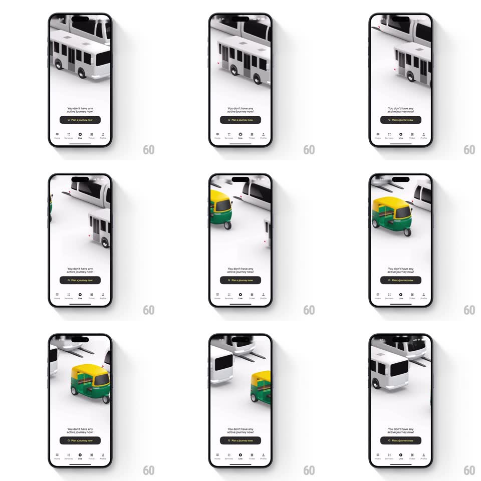

Media
Frame-by-frame

Rebuild this animation 1:1: Namma Yatri's live empty state - isometric 3D buses, a metro, and a green-yellow auto-rickshaw loop along their paths over the "You don't have any active journey now!" message.

Rebuild this animation 1:1: Namma Yatri's live empty state - isometric 3D buses, a metro, and a green-yellow auto-rickshaw loop along their paths over the "You don't have any active journey now!" message. ## Integration Integration: stack-agnostic spec - springs given as stiffness/damping, timed motions as duration + curve; map every value to your framework and animation library of choice. ## Scene White empty state: an isometric 3D scene filling the upper two-thirds (white metro train on a rail, white buses, a green-and-yellow auto-rickshaw on light grey roads), "You don't have any active journey now!" copy, a black "Plan a journey now" pill, and the bottom nav. ## Motion spec Pattern: continuous looping vehicle scene. - Vehicles: each drives its own closed path - the metro glides along its elevated rail (one crossing per 6s, linear), the buses loop the road (8s), the auto weaves a smaller loop (5s) - all entering and exiting the frame edges. - Wheels and motion: vehicles stay flat (isometric) with no bouncing; the only accelerations are gentle eases at path corners (200ms ease-in-out per turn). - Entry: the scene fades in (300ms) when the empty state loads; copy and pill are static. - Loops are staggered so vehicles never cluster or overlap unnaturally. ## Calibration - Isometric projection is fixed - no camera motion, all movement is the vehicles. - Paths cross at different depths with correct z-ordering (auto in front of buses). ## Reduced motion Static scene with vehicles parked. ## Don't miss - The auto is the only colored vehicle - keep it small and bright. - Vehicles exit and re-enter the frame; none reverses direction.